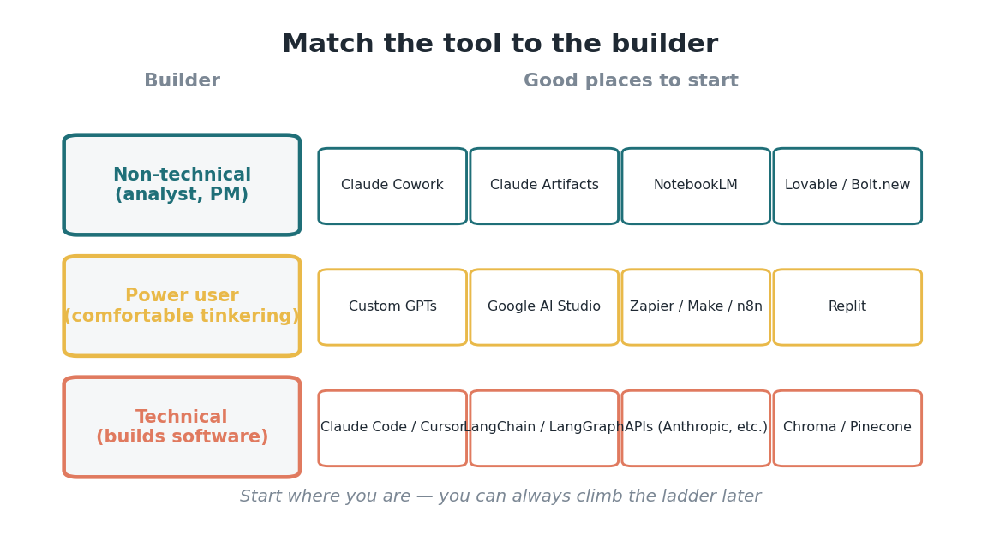
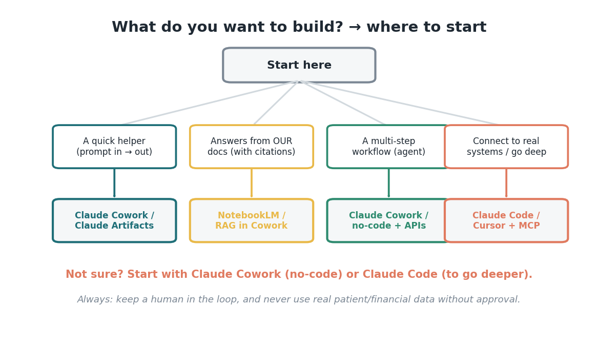

Kotak Perkakas Pembangun
Referensi berbahasa sederhana, disesuaikan dengan level kenyamananmu — pelengkap edisi Jembatan, untuk Hackathon AI Siloam Desember 2026.
Cocokkan alat dengan gayamu membangun
Ini referensi, bukan tugas bacaan wajib — baca sekilas, temukan baris yang terasa seperti kamu, lalu pilih satu hal untuk dicoba. Kamu tidak perlu jadi engineer untuk membangun sesuatu yang berguna. Ide paling penting di sini: mulai dari posisimu sekarang. Seorang analis yang non-teknis dan seorang software engineer akan memilih alat yang berbeda, dan keduanya sama-sama benar. Alat-alat di bawah ini dikelompokkan dari yang paling mudah didekati (tanpa coding sama sekali) sampai yang paling teknis (untuk orang yang menulis kode), lengkap dengan quick-start stack dan kotak keamanan data rumah sakit di bagian akhir. Kalau ragu, mulai dari atas daftar dan naik secukupnya sesuai kebutuhan proyekmu.

Pembuat aplikasi no-code
Paling cocok buat PM dan analis yang mau bikin prototipe aplikasi yang jalan, cepat — tanpa coding.
Platform AI & fitur canggihnya
Bikin hal yang benar-benar berguna tanpa perlu lingkungan coding sama sekali.
Otomatisasi & integrasi
Hubungkan AI ke tools yang sudah jadi bagian keseharian kerja kamu — secara visual, tanpa kode.
API AI & penyedia model
Bahan bangunan paling dasar — dipakai kalau sebuah tool perlu memanggil model secara langsung.
Framework developer & orkestrasi
Buat yang lebih teknis — tim yang membangun fitur agent lebih dalam lewat kode.
Tools coding berbasis AI
AI pair-programmer — buat engineer yang membangun dan merilis software.
Paket quick-start
Belum tahu harus mulai dari mana? Pilih tujuan yang paling cocok, lalu mulai dari situ.
Prototipe no-code tercepat: buka Claude Cowork atau Claude Artifacts, jelaskan tool yang kamu mau, lalu iterasi. Dalam waktu satu sore kamu sudah punya sesuatu yang siap didemokan.
Prototipe RAG tercepat (jawaban dari dokumen kita sendiri): unggah kebijakan atau kontrak kamu ke NotebookLM (atau pakai RAG di dalam Claude Cowork) dan ajukan pertanyaan yang jawabannya berpijak pada dokumen itu, lengkap dengan sitasi.
Prototipe agent tercepat (alur kerja multi-langkah): mulai di Claude Cowork dengan tujuan yang jelas dan file-file kamu; tambahkan otomatisasi no-code (Zapier/Make) atau API hanya kalau alur kerjanya memang perlu menjangkau sistem lain.
Sama sekali belum tahu harus mulai dari mana? Mulai dengan Claude Cowork kalau kamu tidak coding, atau Claude Code kalau kamu bisa. Keduanya membawamu dari ide ke prototipe yang jalan dengan cepat, dan keduanya tetap membuatmu memegang kendali di setiap langkah.

Sebelum kamu membangun: hal wajib soal keamanan data rumah sakit
Kita adalah rumah sakit, jadi kotak ini lebih penting daripada tool mana pun di daftar ini. Tolong baca, dan perlakukan ini sebagai hal yang tidak bisa ditawar untuk apa pun yang kamu bangun — baik saat hackathon maupun sesudahnya.
Keamanan Data
Satu kalimat untuk diingat: bangun seberani mungkin di atas data palsu, dan perlakukan data asli dengan kehati-hatian yang sama seperti biasa.
Semua pengaman yang kita pelajari sepanjang seri ini — human-in-the-loop, akses seminimal mungkin, persetujuan yang jelas — berlaku sejak prototipe pertamamu.
Kata penutup
Kamu tidak perlu menguasai seluruh daftar ini. Kamu cuma perlu memilih satu tool yang cocok dengan posisimu, dan mencoba satu ide kecil. Itulah inti dari hackathon ini, dan referensi ini ada semata-mata untuk menghilangkan keraguan "tapi tool yang mana ya?". Mulai dari atas, tetap kecil, jaga selalu ada human-in-the-loop, lindungi data pasien kita — dan bangun sesuatu. Kami tidak sabar melihat apa yang kamu buat di bulan Desember.
Sumber
- Kotak perkakas pembangun, pola, dan panduan quick-start — The AI Hackathon Guide (Karadimitriou, Nova Science Ventures, 2026), https://kosmas10.github.io/ai-hackathon-guide/
- Penyelenggaraan hackathon, starter kit, dan keberlanjutan — Virtasant, "How to Create and Host an AI Hackathon in 6 Weeks" (Feb 2026), https://www.virtasant.com/ai-today/how-to-create-and-host-an-ai-hackathon-in-6-weeks
- Standar terbuka MCP ("USB-C untuk AI") — modelcontextprotocol.io.
- Tren adopsi dan biaya AI — Stanford AI Index 2025 (hai.stanford.edu).
- Nama-nama tool disebutkan hanya sebagai orientasi; penyebutannya bukan bentuk endorsement, dan ketersediaan/fitur bisa berubah seiring waktu.